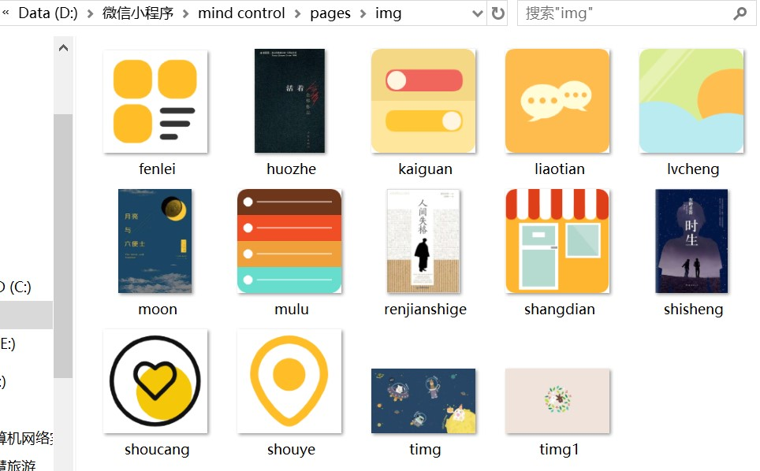

全局配置的图标我们可以直接在网上搜索并下载PNG的格式，将其保存在你所新建的一个在你的小程序pages文件夹下的一个image文件夹里。如下图：

在app.json中，增加一个tabBar标签，并在这个标签里面写关于底部的图标和文字等内容。同时需要链接一个""pages":[ ]"，在全局配置的代码最顶部，在[ ]中写入pagePath的内容。
{
"pagePath": "pages/index/index",
"text": "首页",
"iconPath": "pages/img/shouye.png",
"selectedIconPath": "pages/img/shouye.png"
},
{
"pagePath": "pages/logs/logs",
"text": "分类",
"iconPath": "pages/img/fenlei.png",
"selectedIconPath": "pages/img/fenlei.png"
},
{
"pagePath": "pages/xinjian/xinjian",
"text": "收藏",
"iconPath": "pages/img/shoucang.png",
"selectedIconPath": "pages/img/shoucang.png"
}
页面插入图片需要一个image标签，而要让图片下的文字和图片都居中，可以让图片和文字都在同一个view标签里面，然后通过wxss来设置样式。
<view class="shisheng">
<image src="/pages/img/shisheng.jpg" mode="aspectFill"></image>
<text>《时生》——东野圭吾</text>
<text>\n</text>
</view>
.shisheng{
display: flex;
flex-direction: column;
align-items: center;
}
总结
在添加图标或图片时，直接将其拖动到小程序开发工具里的image文件夹下是不可以的，需要在复制到电脑里的存放小程序文件的文件夹里的image文件夹。全局配置时尤其注意对"[ ]"和"{ }"的使用及每个未完结的 ] 和 } 后面的英文状态下的逗号。